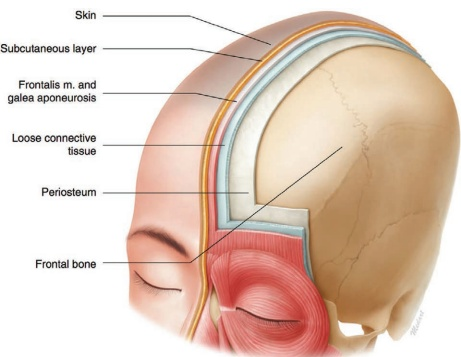
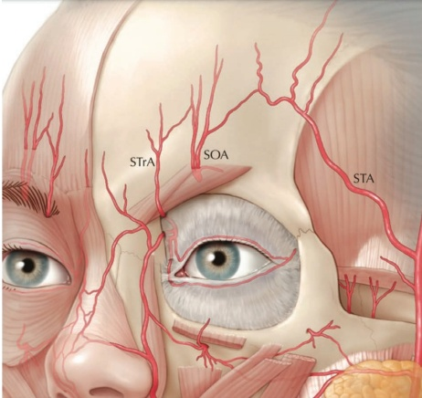
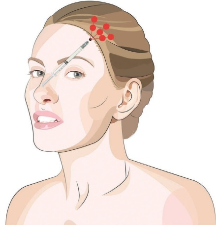
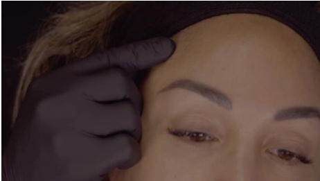
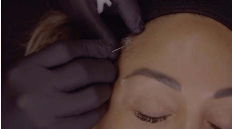
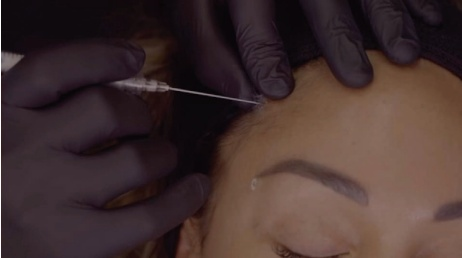
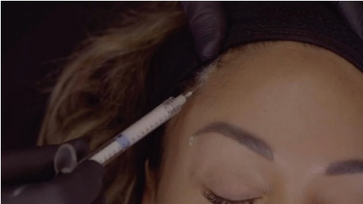
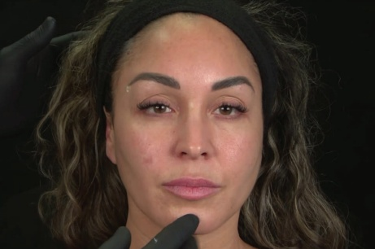

4 面部上三分之一：前额提升
面部上三分之一额头提升
JANI VAN LOGHEM
4.1 引言
骨吸收在衰老过程中起重要作用，并显著导致软组织松弛。颅骨直径变小，而软组织相对变宽，从而引起前额皮肤和眉毛的下移。由于原发点到附着点的距离缩短，额肌可能变得过度活跃：其起源于头深筋膜（galea aponeurotica），附着于眉毛皮肤。可使用羟基磷灰石钙（CaHA）来纠正颅骨的体积丢失，并将其置于潜在空间——头深筋膜和骨膜之间的滑动平面即头深筋膜下间隙（subgaleal space）（图 4.1–4.2）[1]。理想的器械是直径为 25G 或更粗、无创伤的钝性套管针，以降低尤其是在眶上动脉和眶上沟动脉及其分支处发生动脉内注射的几率。
4.2 钝性套管针技术（三点或五点入路）
关于注射定位，参见图 4.3。
4.2.1 分步技术
与锐针注射相比，使用钝性套管针在头深筋膜层进行产品定位能提供更高的精确度 [3]。
-
对皮肤和毛发进行消毒。
-
可考虑进行眶上沟神经、眶上神经和颧颞神经阻滞。在神经的出口部位（眶上和眶上沟）附近注射约 0.1–0.2 mL 的含肾上腺素的 1% 利多卡因（1:200000）。也可考虑进行颧颞神经阻滞，注射约 0.5 mL 含肾上腺素的利多卡因（请参阅第三章的局部麻醉）。
-
检查搏动并标记每侧一个入点，位于颞嵴发际线下方，并用含肾上腺素的 1% 利多卡因进行麻醉（图 4.4）。
-
用 23G 针在皮肤上预刺一个小孔（图 4.5）。




-
使用非创伤性钝性套管针（建议使用 25G、38 mm 或 50 mm 的钝性套管针），穿过皮肤直至到达皮下脂肪层。
-
用未主导手的拇指和食指捏住钝性套管针前方的皮肤，使头深筋膜从骨膜上抬起。这样就为通往深层的最少阻力路径创造了通道（图 4.6）。
-
将钝性套管针沿头深筋膜的阻力进行操作。通常采用铅笔滚动技术较为有效，即指间旋转注射器，使钝性套管针尖能找到最少阻力的路径。
-
在抬起钝性套管针前方的肌肉的同时，将钝性套管针推进真皮层下空间。
-
放置多个团注和向深层（retrogrades）的未稀释或微稀释的 CaHA，最大剂量为 0.1 mL（图 4.7）。


-
建议每侧使用至少 1.5 mL 的产品。
-
检查是否有可见的异常，如有必要则轻柔按摩以纠正。
-
评估前额提升的程度并考虑补充更多产品。需注意由于麻醉可能导致额肌松弛，且麻醉可能引起暂时的眼睑下垂。
4.3 术后护理
注射后，由于局麻药（利多卡因）和产品的作用，额肌可能会暂时放松。此外，由于该区域压力增加，可见静脉有短暂的扩张。前额的水肿可能不均匀，因此应告知患者任何水肿都是可以预期的且是暂时的，但持续时间最长可达五天。水肿也可能向下蔓延至眼睑。
4.4 实现最佳效果的附加治疗
用于提升眉部位置的附加治疗包括：
• 额凹（第 5 章）
颞区凹陷（第 6 章）
外侧眉提升（第 7 章）

C 角（第 9 章）
眉部下压肌的肉毒毒素
聚焦超声
丝线
• 手术提升
作为置于皮下区域的填充剂，它会拉伸额肌；因此可以预期减少水平额纹 [5,6]。
有关最终效果和产品应用技术的可视化，请参阅图 4.8。
参考文献
[1] R. J. Warren et al., “Face lift,” Plast Reconstr Surg, vol. 128, no. 6, 2011.
[2] J. A. J. van Loghem et al., “Cannula versus sharp needle for placement of soft tissue fillers: An observational cadaver study,” Aesthet Surg J, vol. 38, no. 1, pp. 73–88, 2017.

.
[3] R. B. Shaw et al., “Aging of the facial skeleton: Aesthetic implications and rejuvenation strategies,” Plast Reconstr Surg, vol. 127, no. 1, pp. 374–383, 2011.
[4] C. Faris et al., “The midline central artery forehead flap: A valid alternative to supratrochlear-based forehead flaps,” JAMA Facial Plast Surg, vol. 17, no. 1, pp. 16–22, 2015.
[5] H.-J. Kim et al., “Clinical anatomy of the face for filler and botulinum toxin injection,” in: Clinical Anatomy of the Face for Filler and Botulinum Toxin Injection. Springer, 2016.
[6] J. A. J. van Loghem, “Use of calcium hydroxylapatite in the upper third of the face: Retrospective analysis of techniques, dilutions and adverse events,” J Cosmet Dermatol, vol. 17, no. 6, pp. 1025–1030, 2018.